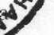
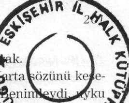

ologdur ve önemli olanı sezen altıncı hisse sahiptir.
- Ona güveneceğim.
- Şansınız açık olsun!
El sıkıştılar ve Yves helikoptere bindi. Birkaç dakika sonra uçan makineler ufuk çizgisinde kayboluyorlardı. Ahmed içini çekti. Bir kez daha hayatının dizginlerini elinden kaçırmıştı, bir kez daha Alfred Tannenberg'in eline düşmüştü. İhtiyar şüpheye yer bırakmamıştı: ya o da işe katılacaktı ya da Alfred onu öldürecekti. Ya da öldürmekten daha kötüsü, onu Saddam'ın gizli polisine hain diye yakalatacaktı.
Ahmed kimsenin içinden sağ çıkmadığı Saddam'ın zindanlarından birinde hepten kaybolmasını sağlamanın Alfred için hiç sorun olmayacağını biliyordu.
Alfred ona küçümseyerek, "Eğer" demişti, "operasyon iyi sonuçlanırsa ve Clara tabletleri bulursa, nereye istersen gidebilirsin." Böyle demişti. Kaçmasına yardım etmeyecekti, ama engel de olmayacaktı.
Tannenberg'in gece gündüz onu izlettirdiğinden emindi. O, Alfred'in adamlarını ya da belki Albay'm adamlarını görmüyordu, ama onlar onu görüyorlardı.
Bakanlığa döndü. Yapacak çok işi vardı. Alfred'in ondan istediğini bulmak kolay değildi, ama bu bilgiye ondan başkası da ulaşamazdı.
Coraline
Helikopterlerin sesini duyunca Clara'mn içini bir heyecan kapladı.
Picot geldiğinde onların çoktan kazıya başladıklarım görüp şaşacaktı.
Fabiân ile Marta Clara'mn yanma geldiler. Onlar da gerçekleştirdikleri işten gurur duyuyorlardı.
Picot ayağını yere basınca Fabiân ona koştu, kucaklaştılar.
- Seni özlemişim, dedi Picot.
- Ben de, yanıtını verdi Fabiân gülerek.
Marta ile Clara, bembeyaz kesilmiş bir yüzle helikopterden henüz inen Albert Anglade'yi kendine getirmeye uğraşıyorlardı. Clara'mn bir işaretiyle elinde bir şişe su ile bir plastik bardak olan bir köylü göründü.
- İçin, iyi gelir.
- İçebileceğimi sanmıyorum, diye inliyor, içmemek için direniyordu.
- Hadi hadi, geçer; bak helikopter beni de tuttu, diyerek onu teselli ediyordu Marta.
- İnan ki bu berbat şeylere bir daha hayatta binmem, diyordu Albert. Bağdat'a arabayla döneceğim.
- Ben de, ben de yanıtını verdi Marta bir yandan da gülüyordu. Ama gel sen şu suyu iç. Clara haklı, iyi gelir.
Fabiân gururlanarak kampı Yves'e gösterdi, laboratuvarları monte edecekleri ve bulunan tabletleri ya da başka objeleri tasnif edecekleri evleri, bilgisayarları bağlayacakları yerleri, konuşmak ve yapılan işleri tartışmak için toplanacakları tek bölümlü evi, duşları, helaları, sonraki aylarda 200
ekipten, kimi köylülerin kiraya vermek istedikleri odaları tutmak istemeyen bir bölümünün,oturacağı, sugeçirmezleştirilmiş çadırları.
Evlerden birine girdiler, orada Fabiân bir çalışma odası hazırlamıştı,
"Burası kaptan köprüsü olacak" diyordu. Güçbela arkalarından gelen Albert küt diye bir sandalyeye çöktü, o sırada Marta ile Clara "ille su iç" diye ısrar ediyor, bu arada Picot'ya da bir bardak su uzatıyorlardı.
- Üstesinden iyi gelmişsiniz, dedi Yves Picot. Sizin hep önden gideceğinizi biliyordum zaten.
- Aslında daha çalışmaya yeni başladık, dedi Marta. Birkaç gündür bölgeyi açıyor ve işçilerin becerikliliklerini deniyoruz. Her türlüsü var, ama fena insanlar değiller, sıkı çalışacaklarına eminim.
- Bundan başka, sana danışmadımsa da, Marta'yı işçibaşı olarak atadım, eline de bir kamçı verdim, dedi Fabiân gülerek. Hepimizi düzene soktu, yani aslında bizi asker gibi hizaya getirdi. Ama işçiler çok etkilendiler, ona sormadan kımıldamıyorlar bile.
- İyi bir işçibaşı her zaman lazım, dedi Picot şakayı sürdürerek. İşin kötü tarafı işimi elimden alıp beni işsiz bırakmış.
Clara eğlenerek onları izliyor, ama lafa karışmaya cesaret edemiyordu. Geçen günler içinde Fabiân ile Marta arasında yalnızca sağlam bir dostluk olduğunu fark etmişti. Aralarındaki işbirliği fark ediliyordu, bakışarak anlaşıyorlardı. Fabiân ile Picot arasında da böyle bir bağ olmalıydı, bunu seziyordu.
Coraline
- Biz nerede yatacağız? diye sordu Albert, hâlâ midesi bulanıyordu.
- Yanı başımızdaki eve senin için bir oda hazırladım, bir oda da Yves'e, bir de bana. Dört bölümlü bir ev bu, üçümüz sığarız. Ya da dilersen, evlerinde kiralık oda teklif eden köylülerin listesini gözden ge
çiririm... dedi Fabiân.
- Hayır, bence böylesi iyi, sakıncası yoksa biraz kendimi yatağa atacağım, derken Albert neredeyse yalvarıyordu.
- Seninle gelip yerini göstereyim, diye önerdi Clara.
Clara ile Albert çıkınca Yves, Fabiân'a döndü.
- Sorun var mı?
- Hiçbir sorun yok. Burada herkes Clara'ya taparcasına saygı duyuyor. Clara hiçbir şeye itiraz etmedi, bütün önerilerimizi kabul etti; evet, daha doğrusu, Marta'nm emirlerini demeliyim... Fikrini söylüyor, ama biz beğenmezsek tartışmayla vakit kaybetmiyor. Burada herkesin ona tabi olduğu doğru, yani bir karışıklık çıkarsa ona soracaklar ve ona itaat edecekler. Ama çok zeki, dizginleri elinde tuttuğunu ilan etmiyor.
- Ona anne gibi bakan bir kadın var, Fatima. Bazen kazı yerine kadar onunla geliyor. Clara'dan gece gündüz hiç ayrılmayan dört de adanı var, diyerek Marta bilgi verdi.
- Evet, Bağdat'tayken de fark etmiştim, o hep koruma altında, Irak'taki durum göz önüne alınırsa pek de şaşılacak şey değil. Ayrıca


kocası rejimin önemli bir adamı, dedi Yves doğrulaı
- Yok, yalnızca ülkenin durumundan değil, dedil rek. Geçen gün korumaları onu gözden kaçırdılar tutmamıştı, gün doğmadan kalkmış, gezmeye çıkmışft^5pBizi bulduk^
rında çıldırmış gibiydiler; içlerinden biri Clara'yı: "Eğel^hjfr olursa büyükbaban hepimizi öldürür" diyerek uyardı, sonra bazı İtalyanlarla ilgili imalarda bulundu; Clara bana bakıp onları susturdu.
- Yani, kızın düşmanları var... dedi Picot alçak sesle.
- Hayal âleminde uçmasak, diyerek lafa karıştı Fabiân. Korumalarının hangi olayı kastettiğini bilmiyoruz.
- Adamlar dehşet içindeydi, inan bana, dedi Marta üsteleyerek. Bir şey olacak diye korkuyorlardı, Clara'mn büyükbabasının gözlerini iyice korkuttuğu belli.
- Bunu öğrenenleyiz, diyerek sızlandı Yves.
- Clara konuşmak istemeyeceğine göre... dedi Marta.
- Büyükbabasının ne zaman Harran'da bulunduğunu, ne yaptığını bize anlatması için uğraşalım, ama ne yapsak boş, ağzından tek söz ka-
çırmıyor, sorulara dolambaçlı cevaplar veriyor. Neyse, sana kampın ge-i kalan taraflarını gösterelim, dedi Fabiân.
Yves onları içtenlikle kutladı, sonra Fabiân'ı bu maceraya yanında katılmaya ikna edebildiği için kendini de kutladı. Marta'nın çalışmasını Coraline
da takdir etti. Marta düzen kurmaya doğuştan yetenekli bir kadındı.
- Çalışmak için ve materyali yerleştirmek için kullanacağımız evlere birer isim taktını, dedi Marta. Şimdi bulunduğumuz yer "genel karar-tabletleri yerleştireceğimiz yer mantıksal olarak "tabletler evi", ılsigisayarları oraya yerleştireceğiz, diyerek evlerden birini eliyle gös-rdi. Ona kısaca "iletişim" diyeceğiz. Depoları da her zamanki gibi yal-zca numaralarla göstereceğiz.
Köy muhtarı bir hoş geldin resepsiyonu düzenlemişti; öğle yemeğini unla yediler, yanlarında köyün kimi önemli adamları da vardı. İşçile-
şefi olarak seçtikleri adanı Yves'in çok hoşuna gidiyordu; nedenini miyordu, güvenilir ve nazik bir adama benziyordu, ama diğerleri gibi ıı bir köylü olmadığı izlenimi uyandıran bir havası vardı,
•yed Sahadi, uzun boylu, adaleli bir adamdı. Teni, oranın yerlileri-jcnden daha açık renkti. Görünüşü ve davranışı asker gibiydi, emir neye alışkın olduğu fark ediliyordu,
ngilizce konuşuyordu, bu da Yves'i şaşırtıyordu.
^- Bağdat'ta çalıştım, orada öğrendim, demişti sadece.
onu tanıyormuş gibiydi, tanıdık biri gibi davransa da o arala-
ı saygılı bir mesafe bırakıyordu,
nlar ona çıt çıkarmadan boyun eğiyorlardı, dahası köy muhtarı ııın yanında ürkekti.
- Bu Ayed nereden çıktı? Yves Picot merak etmişti.
- Bizden birkaç; gün sonra geldi. Glara "onu bekliyordum" diyor, çünkü daha önce 'kocasıyla ve onunla birlikte çalışmışmış. Ne diyeyim bilmem, askere benziyor, dedi Fabiân.
- Evet, bana da öyle geldi; Saddam'm bir casusu olabilir, dedi Yves.
- Tabii, bizi gözetlediklerini kabul etmeliyiz, içtiğimiz çorbaya kadar her yerde casus var. Burası bir diktatörlük, üstelik de savaş arifesindeyiz, bu Ayed'in casus olmasına şaşmamalıyız, dedi Marta büyük bir do
ğallıkla karşılayarak.
- Yine de hoşuma gidiyor, dedi Yves sızlanarak.
- Bakalım davranışları nasıl olacak, dedi Marta.
O akşam, bütün ekip yerleştikten sonra, Yves çalışma planını açıklamak için hepsini bir araya topladı. Hepsi de profesyoneldiler, eşlik eden öğrenciler de son sınıftaydılar, kimileri başka kazılara katılmışlardı, böylece Yves uzun uzun konuşarak zaman yitirmedi.
Sabah saat dörtte ayakta olacaklardı. Saat dört ile beşe çeyrek kala arası herkes duşunu almış, kahvaltısını etmiş olacaktı; sonra hemen, saat beşten önce kazı yerinde olacaklardı. Saat onda, on beş dakikalık kısa bir dinlenme aralığı verecekler, sonra saat ikiye kadar çalışacaklardı. Saat ikiden dörde kadar öğle yemeği yiyecekler ve dinlenmeye zaman ayıracaklardı; saat dörtten sonra yeniden çalışmaya başlayacak
Coraline
lar, güneş batana kadar çalışacaklardı.
Kimseden çıt çıkmadı, ne Yves'in kurduğu ekipten ne de köyden tutulan yardımcı işçilerden. Köylüler maaşlarını dolar olarak alacaklardı, alacakları para kazı yokken kazandıklarının on katıydı, onun için ne kadar gerekirse o kadar çalışmaya hazırdılar.
Toplantı bitince orta boylu, gözlüklü, hayatında tabak bile kırmamış
gibi görünen genç bir adam, Yves Picot'ya yanaştı.
- Bilgisayarların kurulumunda sorunum var. Elektrik akımı çok zayıf, aletlerse çok güçlü...
- Ayed Sahadi'yle konuşun; o size ne yapacağınızı söyler, oldu Picot'nun yanıtı.
- Hoşlanmadın sen ondan... diyen Marta'nm eleştirisi Yves Picot'yıı şaşırttı.
- Neden öyle diyorsun ki?
- Çünkü fark ediliyor. Aslında Ante Plaskiç'ten kimse hoşlanmıyor.
Onu neden gruba kattın bilmiyorum.
- Onu bana Berlin Üniversitesi'nden bir arkadaş tavsiye etti.
- Sanırım herkesin kendine göre önyargıları var, Boşnakların Sırplar ve Hırvatlar tarafından öldürüldüğü o katliamı düşünmemek elde de
ğil, bu Ante de bir Hırvat.
- Arkadaşım bana onun sağ kalanlardan biri olduğunu söyledi, onla-203
nr. köyünün de soydaşlarının yaptığı bir katliama misilleme olarak Boşnaklar tarafından saldırıya uğradığını anlattı. Bilmiyorum... O lanetli savaşta acı çeken ve en büyük kötülüğe uğrayan Boşnaklar oldu,
: ı haklı olabilirsin, istemesem de önyargılar beni etkiliyor.
- Bazen çok basit şemalarla hareket ederiz; bu iyidir bu kötüdür gibi, ÎMinların hepsi iyidir bunların hepsi kötüdür deriz ve nüanslara zaman anırmayız. Ante gerçekten de savaşın kurbanlarından biri olabilir pekâlâ.
- Ya da cellatlarından biri.
- Çok küçüktü, diye üsteledi Marta, çünkü şeytanın avukatı rolünü oynamak hoşuna gidiyordu.
- O kadar da küçük değildi. Şimdi otuzuna yakın herhalde, değil mi?
- Sanırım yirmi yedi var.
- Yugoslav iç savaşında adam öldüren on dört on beş yaşında çocuklar vardı.
- Onu geri gönder.
- Hayır... dediğin gibi, adil olmaz.
- Ben böyle bir şey demedim, diyerek Marta itiraz etti.
- Deneyelim bakalım, onu her görüşümde bu rahatsızlığı hissetmeye devam edersem, senin dediğini dinleyip onu geri yollarım.
Fabiân, Picot'nun yardımcısı Albert Anglade'yle birlikte göründü.
- Sizi düşünceli görüyorum, ne var?
Coraline
- Ante'den konuşuyoruz, dedi Marta.
- Yves'in zerre kadar hoşuna gitmiyor, onu getirdiğine pişman, yanılıyor muyum?
Yves Picot bir kahkaha patlattı. Albert'in yorumunu gülünç bulmuştu. Albert onu iyi tanırdı, yıllarca birlikte çalışmışlardı, onun kiminle geçineceğini kiminle geçinemeyeceğini, kime ilgisiz kalacağını önceden sezerdi.
- Onda insanı rahatsız eden bir şey var, diyerek sürdürdü konuşmasını Albert. Benim de hoşuma gitmiyor.
- Hırvat olduğu için, sırf bunun için, dedi Marta.
- Çocuklar, bunlar ırkçı önyargılar.
Fabiân'm yorumu inançlarının en derinine inen bir darbe oldu, ırkçı fikirlerden hepsi nefret ediyordu, herhangi bir insana karşı ırkçılığın en ufak bir iması bile onları irkiltiyordu.
- Bel altından vuruyorsun, diye yakındı Yves.
- Bu konuşmayı yok sayalım, dedi Fabiân çok ciddi bir tavırla. Ülkesinde ya da toplumunda başkalarının yaptıklarından dolayı bir insanı suçlayamayız.
- Haklısın, ama gerçekten de onu pekiyi tanımıyoruz, diyerek Yves'e bir destek atışıyla Albert söze karıştı.
- İyi iyi, konuyu değiştirelim. Clara nerede? diye sordu Marta.
- Ayed Sahadi'nin yanında. İşçilerle konuşmaya kaldılar. Sonra, biz-